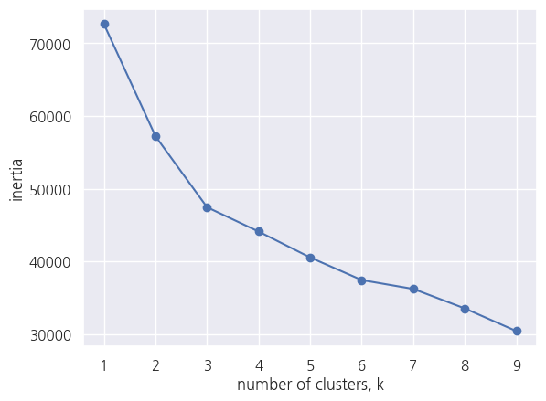
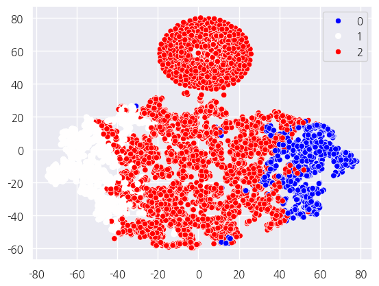
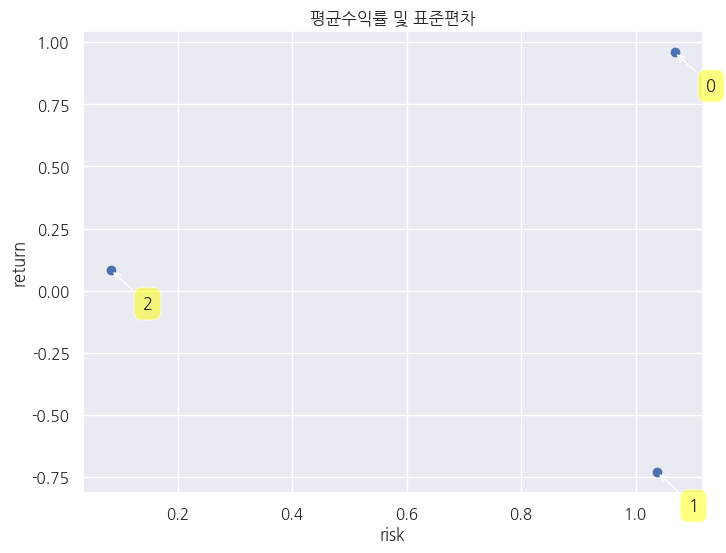
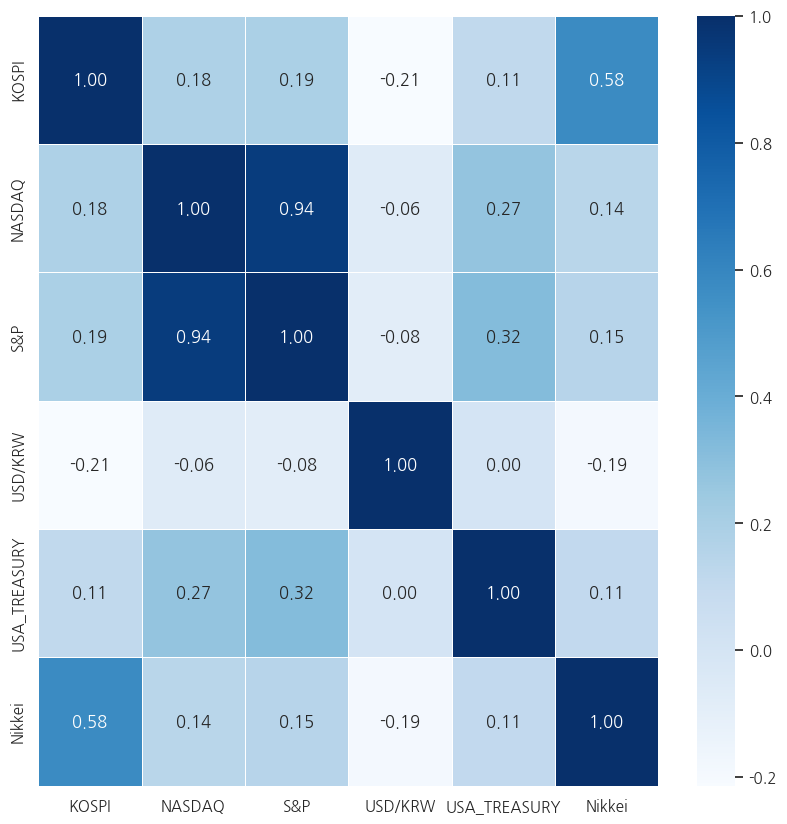
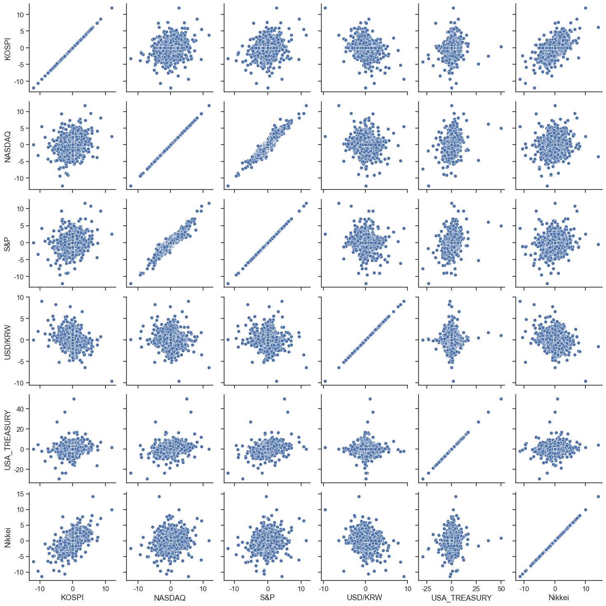
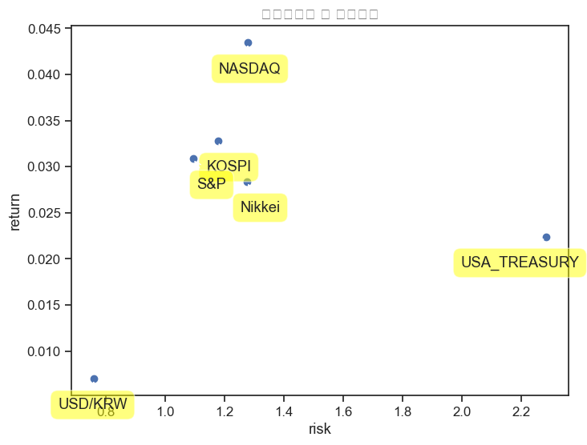
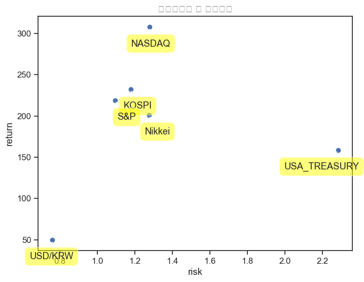

import numpy as np
import pandas as pd
import matplotlib.pyplot as plt
import seaborn as sns
sns.set()
import koreanize_matplotlib
from sklearn.cluster import DBSCAN
from sklearn.cluster import KMeans
import FinanceDataReader as fdr
import cvxopt as opt
from cvxopt import solversKOSPI와 연관된 지수는?
KOSPI와 연관된 지수는?
세계 각국의 지수들 관련 데이터 불러오기
KOSPI
- change(수익률)에 * 100을 해서 %수치로 보이기 편하게 수정하였고, Open(시가), High(고가), Close(종가), Volume(거래량)을 제거
kospi = fdr.DataReader('KS11')
kospi['Change'] = kospi['Change'] * 100
kospi = kospi.drop(['Open', 'High', 'Low', 'Close', 'Volume', 'UpDown', 'Comp', 'Amount', 'MarCap'], axis = 1)
kospi.rename(columns = {'Change':'KOSPI'},inplace=True)
kospi.head()| KOSPI | |
|---|---|
| Date | |
| 2001-06-11 | -2.18 |
| 2001-06-12 | -0.18 |
| 2001-06-13 | 1.14 |
| 2001-06-14 | -0.05 |
| 2001-06-15 | 0.85 |
Nasdaq
nasdaq = fdr.DataReader('IXIC', '2001-06-08')
nasdaq['Change'] = round(nasdaq['Adj Close'].pct_change() *100, 2)
nasdaq = nasdaq.drop(['High', 'Low', 'Open', 'Close', 'Volume', 'Adj Close'], axis = 1)
nasdaq = nasdaq.drop('2001-06-08', axis = 0)
nasdaq.rename(columns = {'Change':'NASDAQ'},inplace=True)
nasdaq| NASDAQ | |
|---|---|
| Date | |
| 2001-06-11 | -2.00 |
| 2001-06-12 | -0.04 |
| 2001-06-13 | -2.23 |
| 2001-06-14 | -3.66 |
| 2001-06-15 | -0.77 |
| ... | ... |
| 2024-01-17 | -0.59 |
| 2024-01-18 | 1.35 |
| 2024-01-19 | 1.70 |
| 2024-01-22 | 0.32 |
| 2024-01-23 | 0.43 |
5690 rows × 1 columns
S&P
sap = fdr.DataReader('S&P500', '2001-06-08', '2024-01-23')
sap['Change'] = round(sap['Adj Close'].pct_change() * 100, 2)
sap = sap.drop(['High', 'Low', 'Open', 'Close', 'Volume', 'Adj Close'], axis = 1)
sap = sap.drop('2001-06-08', axis = 0)
sap.rename(columns = {'Change':'S&P'},inplace=True)
sap.head()| S&P | |
|---|---|
| Date | |
| 2001-06-11 | -0.84 |
| 2001-06-12 | 0.12 |
| 2001-06-13 | -1.13 |
| 2001-06-14 | -1.75 |
| 2001-06-15 | -0.45 |
미국 10년 국채
usa_treasury = fdr.DataReader('US10YT', '2001-06-08', '2024-01-23')
usa_treasury['Change'] = round(usa_treasury['Adj Close'].pct_change() * 100, 2)
usa_treasury = usa_treasury.drop(['High', 'Low', 'Open', 'Close', 'Volume', 'Adj Close'], axis = 1)
usa_treasury = usa_treasury.drop('2001-06-08', axis = 0)
usa_treasury = usa_treasury.rename(columns = {'Change':'USA_TREASURY'})
usa_treasuryC:\Users\sigma\AppData\Local\Temp\ipykernel_19212\2197024751.py:2: FutureWarning: The default fill_method='pad' in Series.pct_change is deprecated and will be removed in a future version. Either fill in any non-leading NA values prior to calling pct_change or specify 'fill_method=None' to not fill NA values.
usa_treasury['Change'] = round(usa_treasury['Adj Close'].pct_change() * 100, 2)| USA_TREASURY | |
|---|---|
| Date | |
| 2001-06-10 | 0.00 |
| 2001-06-11 | -0.86 |
| 2001-06-12 | -0.89 |
| 2001-06-13 | 0.32 |
| 2001-06-14 | -0.80 |
| ... | ... |
| 2024-01-17 | 0.98 |
| 2024-01-18 | 0.93 |
| 2024-01-19 | 0.05 |
| 2024-01-21 | 0.00 |
| 2024-01-22 | -1.25 |
6929 rows × 1 columns
Nikkei
japan = fdr.DataReader('N225', '2001-06-08', '2024-01-23')
japan['Change'] = round(japan['Adj Close'].pct_change() * 100, 2)
japan = japan.drop(['High', 'Low', 'Open', 'Close', 'Volume', 'Adj Close'], axis = 1)
japan = japan.drop('2001-06-08', axis = 0)
japan.rename(columns = {'Change':'Nikkei'},inplace=True)
japanC:\Users\sigma\AppData\Local\Temp\ipykernel_19212\3872993107.py:2: FutureWarning: The default fill_method='pad' in Series.pct_change is deprecated and will be removed in a future version. Either fill in any non-leading NA values prior to calling pct_change or specify 'fill_method=None' to not fill NA values.
japan['Change'] = round(japan['Adj Close'].pct_change() * 100, 2)| Nikkei | |
|---|---|
| Date | |
| 2001-06-11 | -1.52 |
| 2001-06-12 | -2.92 |
| 2001-06-13 | -0.13 |
| 2001-06-14 | 0.18 |
| 2001-06-15 | -0.44 |
| ... | ... |
| 2024-01-16 | -0.79 |
| 2024-01-17 | -0.40 |
| 2024-01-18 | -0.03 |
| 2024-01-19 | 1.40 |
| 2024-01-22 | 1.62 |
5641 rows × 1 columns
usd_krw = fdr.DataReader('USD/KRW', '2001-06-08')
usd_krw['Change'] = round(usd_krw['Adj Close'].pct_change() * 100, 2)
usd_krw = usd_krw.drop(['High', 'Low', 'Open', 'Close', 'Volume', 'Adj Close'], axis = 1)
usd_krw = usd_krw.rename(columns = {'Change':'USD/KRW'})
usd_krwC:\Users\sigma\AppData\Local\Temp\ipykernel_19212\4191296131.py:2: FutureWarning: The default fill_method='pad' in Series.pct_change is deprecated and will be removed in a future version. Either fill in any non-leading NA values prior to calling pct_change or specify 'fill_method=None' to not fill NA values.
usd_krw['Change'] = round(usd_krw['Adj Close'].pct_change() * 100, 2)| USD/KRW | |
|---|---|
| Date | |
| 2003-12-01 | NaN |
| 2003-12-02 | -0.28 |
| 2003-12-03 | -0.21 |
| 2003-12-04 | -0.20 |
| 2003-12-05 | -0.45 |
| ... | ... |
| 2024-01-18 | 0.47 |
| 2024-01-19 | -0.48 |
| 2024-01-22 | -0.33 |
| 2024-01-23 | 0.41 |
| 2024-01-24 | -0.32 |
5258 rows × 1 columns
데이터 병합
각 지수들 및 환율 국채를 합쳐줍니다. 결측치는 평균으로 대체하였습니다.
result_data = pd.concat([kospi, nasdaq, sap, usd_krw, usa_treasury, japan], axis = 1)
result_data.fillna(result_data.mean(), inplace = True)
result_data = round(result_data, 2)| KOSPI | NASDAQ | S&P | USD/KRW | USA_TREASURY | Nikkei | |
|---|---|---|---|---|---|---|
| Date | ||||||
| 2001-06-11 | -2.18 | -2.00 | -0.84 | 0.01 | -0.86 | -1.52 |
| 2001-06-12 | -0.18 | -0.04 | 0.12 | 0.01 | -0.89 | -2.92 |
| 2001-06-13 | 1.14 | -2.23 | -1.13 | 0.01 | 0.32 | -0.13 |
| 2001-06-14 | -0.05 | -3.66 | -1.75 | 0.01 | -0.80 | 0.18 |
| 2001-06-15 | 0.85 | -0.77 | -0.45 | 0.01 | 0.25 | -0.44 |
| ... | ... | ... | ... | ... | ... | ... |
| 2023-12-24 | 0.03 | 0.04 | 0.03 | 0.01 | 0.00 | 0.03 |
| 2023-12-31 | 0.03 | 0.04 | 0.03 | 0.01 | 0.00 | 0.03 |
| 2024-01-07 | 0.03 | 0.04 | 0.03 | 0.01 | 0.00 | 0.03 |
| 2024-01-14 | 0.03 | 0.04 | 0.03 | 0.01 | 0.00 | 0.03 |
| 2024-01-21 | 0.03 | 0.04 | 0.03 | 0.01 | 0.00 | 0.03 |
7084 rows × 6 columns
result_data.to_csv('./data/kospi_result_data.csv')군집분석
K_Means 를 사용하여 군집을 분류하였습니다.
- kospi 를 target으로 설정하였습니다
X = result_data[["NASDAQ","S&P","USD/KRW","USA_TREASURY","Nikkei"]]
y = result_data["KOSPI"]\(N\) = \(\{3,4\}\)일때 최적의 분류를 확인
ks = range(1,10)
inertias = []
for k in ks:
model = KMeans(n_clusters=k,random_state=42)
model.fit(X)
inertias.append(model.inertia_)
plt.plot(ks, inertias, '-o')
plt.xlabel('number of clusters, k')
plt.ylabel('inertia')
plt.xticks(ks)
plt.show() 
\(N\) = \(3\)로 군집분석 진행
n_clusters = 3
kmeans = KMeans(n_clusters=n_clusters,random_state=42)
kmeans.fit(X)
y_kmeans = kmeans.predict(X)
y_kmeans[1:10]array([2, 2, 1, 2, 2, 2, 2, 2, 1])TSNE를 통한 차원축소 진행
import time
from sklearn.manifold import TSNE
n_sne = X.shape[0]
time_start = time.time()
tsne = TSNE(n_components=2, verbose=1, perplexity=32, n_iter=1000,random_state=0,angle=0.5)
tsne_results = tsne.fit_transform(X)
print( 't-SNE done! Time elapsed: {} seconds'.format(time.time() - time_start ))[t-SNE] Computing 97 nearest neighbors...
[t-SNE] Indexed 7084 samples in 0.004s...
[t-SNE] Computed neighbors for 7084 samples in 0.174s...
[t-SNE] Computed conditional probabilities for sample 1000 / 7084
[t-SNE] Computed conditional probabilities for sample 2000 / 7084
[t-SNE] Computed conditional probabilities for sample 3000 / 7084
[t-SNE] Computed conditional probabilities for sample 4000 / 7084
[t-SNE] Computed conditional probabilities for sample 5000 / 7084
[t-SNE] Computed conditional probabilities for sample 6000 / 7084
[t-SNE] Computed conditional probabilities for sample 7000 / 7084
[t-SNE] Computed conditional probabilities for sample 7084 / 7084
[t-SNE] Mean sigma: 0.000000
[t-SNE] KL divergence after 250 iterations with early exaggeration: 77.894424
[t-SNE] KL divergence after 1000 iterations: 1.677709
t-SNE done! Time elapsed: 11.359419584274292 seconds군집분석 결과 시각화
plt.scatter(tsne_results[:,0], tsne_results[:,1], c=y_kmeans, s=20, cmap='bwr')
sns.scatterplot(x=tsne_results[:,0], y=tsne_results[:,1], hue=y_kmeans, palette='bwr')
plt.show()
df1 = result_data.copy()df1['cluster'] = y_kmeans
df1| KOSPI | NASDAQ | S&P | USD/KRW | USA_TREASURY | Nikkei | cluster | |
|---|---|---|---|---|---|---|---|
| Date | |||||||
| 2001-06-11 | -2.18 | -2.00 | -0.84 | 0.01 | -0.86 | -1.52 | 1 |
| 2001-06-12 | -0.18 | -0.04 | 0.12 | 0.01 | -0.89 | -2.92 | 2 |
| 2001-06-13 | 1.14 | -2.23 | -1.13 | 0.01 | 0.32 | -0.13 | 2 |
| 2001-06-14 | -0.05 | -3.66 | -1.75 | 0.01 | -0.80 | 0.18 | 1 |
| 2001-06-15 | 0.85 | -0.77 | -0.45 | 0.01 | 0.25 | -0.44 | 2 |
| ... | ... | ... | ... | ... | ... | ... | ... |
| 2023-12-24 | 0.03 | 0.04 | 0.03 | 0.01 | 0.00 | 0.03 | 2 |
| 2023-12-31 | 0.03 | 0.04 | 0.03 | 0.01 | 0.00 | 0.03 | 2 |
| 2024-01-07 | 0.03 | 0.04 | 0.03 | 0.01 | 0.00 | 0.03 | 2 |
| 2024-01-14 | 0.03 | 0.04 | 0.03 | 0.01 | 0.00 | 0.03 | 2 |
| 2024-01-21 | 0.03 | 0.04 | 0.03 | 0.01 | 0.00 | 0.03 | 2 |
7084 rows × 7 columns
군집분석 결과에 따른 군집들을 새로운 데이터 프레임으로 생성
## 군집 0 ~ 3 까지 분류된거를 변수명에 추가
cluster_2 = df1[df1['cluster']==2]
cluster_1 = df1[df1['cluster']==1]
cluster_0 = df1[df1['cluster']==0]cluster_0| KOSPI | NASDAQ | S&P | USD/KRW | USA_TREASURY | Nikkei | cluster | |
|---|---|---|---|---|---|---|---|
| Date | |||||||
| 2001-06-26 | -1.56 | 0.67 | -0.15 | 0.01 | 1.79 | 0.64 | 0 |
| 2001-06-28 | -0.25 | 2.44 | 1.25 | 0.01 | 1.78 | -1.16 | 0 |
| 2001-09-04 | 3.13 | -1.92 | -0.06 | 0.01 | 3.38 | 3.49 | 0 |
| 2001-10-11 | 2.70 | 4.62 | 1.52 | 0.01 | 1.63 | 3.83 | 0 |
| 2001-11-02 | 1.19 | -0.03 | 0.29 | 0.01 | 3.06 | 0.35 | 0 |
| ... | ... | ... | ... | ... | ... | ... | ... |
| 2022-06-06 | 0.03 | 0.40 | 0.31 | 0.78 | 2.74 | 0.56 | 0 |
| 2023-05-01 | 0.03 | -0.11 | -0.04 | -0.17 | 3.53 | 0.92 | 0 |
| 2023-05-05 | 0.03 | 2.25 | 1.85 | -1.13 | 2.83 | 0.03 | 0 |
| 2023-10-02 | 0.03 | 0.67 | 0.01 | 0.30 | 2.41 | -0.31 | 0 |
| 2023-10-03 | 0.03 | -1.87 | -1.37 | 0.17 | 2.54 | -1.64 | 0 |
995 rows × 7 columns
cluster_1| KOSPI | NASDAQ | S&P | USD/KRW | USA_TREASURY | Nikkei | cluster | |
|---|---|---|---|---|---|---|---|
| Date | |||||||
| 2001-06-11 | -2.18 | -2.00 | -0.84 | 0.01 | -0.86 | -1.52 | 1 |
| 2001-06-14 | -0.05 | -3.66 | -1.75 | 0.01 | -0.80 | 0.18 | 1 |
| 2001-06-22 | 0.60 | -1.16 | -0.95 | 0.01 | -1.04 | 0.63 | 1 |
| 2001-07-06 | -2.54 | -3.65 | -2.35 | 0.01 | -0.70 | -2.39 | 1 |
| 2001-07-10 | -0.25 | -3.15 | -1.44 | 0.01 | -1.27 | 0.50 | 1 |
| ... | ... | ... | ... | ... | ... | ... | ... |
| 2020-08-17 | 0.03 | 1.00 | 0.27 | 0.16 | -3.67 | -0.83 | 1 |
| 2021-08-16 | 0.03 | -0.20 | 0.26 | -0.06 | -3.08 | -1.62 | 1 |
| 2021-09-20 | 0.03 | -2.19 | -1.70 | 0.57 | -4.45 | 0.03 | 1 |
| 2021-10-04 | 0.03 | -2.14 | -1.30 | -0.31 | 0.14 | -1.13 | 1 |
| 2022-03-01 | 0.03 | -1.59 | -1.55 | 0.28 | -7.18 | 1.20 | 1 |
1181 rows × 7 columns
cluster_2| KOSPI | NASDAQ | S&P | USD/KRW | USA_TREASURY | Nikkei | cluster | |
|---|---|---|---|---|---|---|---|
| Date | |||||||
| 2001-06-12 | -0.18 | -0.04 | 0.12 | 0.01 | -0.89 | -2.92 | 2 |
| 2001-06-13 | 1.14 | -2.23 | -1.13 | 0.01 | 0.32 | -0.13 | 2 |
| 2001-06-15 | 0.85 | -0.77 | -0.45 | 0.01 | 0.25 | -0.44 | 2 |
| 2001-06-18 | -1.64 | -1.96 | -0.49 | 0.01 | 0.25 | -0.72 | 2 |
| 2001-06-19 | 0.02 | 0.20 | 0.34 | 0.01 | -0.25 | -0.97 | 2 |
| ... | ... | ... | ... | ... | ... | ... | ... |
| 2023-12-24 | 0.03 | 0.04 | 0.03 | 0.01 | 0.00 | 0.03 | 2 |
| 2023-12-31 | 0.03 | 0.04 | 0.03 | 0.01 | 0.00 | 0.03 | 2 |
| 2024-01-07 | 0.03 | 0.04 | 0.03 | 0.01 | 0.00 | 0.03 | 2 |
| 2024-01-14 | 0.03 | 0.04 | 0.03 | 0.01 | 0.00 | 0.03 | 2 |
| 2024-01-21 | 0.03 | 0.04 | 0.03 | 0.01 | 0.00 | 0.03 | 2 |
4908 rows × 7 columns
군집별 수익률 확인
- 군집 0 ~ 3 까지의 수익률을 한번 확인
cluster_total= df1.groupby('cluster').mean()
cluster_total['return'] = cluster_total.T.mean()
cluster_total['std'] = cluster_total.T.std()
cluster_total = cluster_total.T
cluster_total| cluster | 0 | 1 | 2 |
|---|---|---|---|
| KOSPI | 0.305276 | -0.370711 | 0.074639 |
| NASDAQ | 0.798905 | -1.309001 | 0.215742 |
| S&P | 0.709920 | -1.130449 | 0.172653 |
| USD/KRW | -0.014442 | 0.094522 | -0.009719 |
| USA_TREASURY | 3.434774 | -2.606080 | -0.036925 |
| Nikkei | 0.363940 | -0.446105 | 0.074531 |
| return | 0.933062 | -0.961304 | 0.081820 |
| std | 1.150517 | 0.874051 | 0.090157 |
- 군집1 : 위험자산 + USA_TREASURY로 이뤄진 군집
- 군집2 : Dolllar로 이뤄진 군집
- 군집3 : 위험자산으로 이뤄진 군집
군집별 수익률 대비 risk 시각화
plt.figure(figsize=(8,6))
plt.scatter(cluster_total.std(), cluster_total.mean())
plt.xlabel('risk')
plt.ylabel('return')
plt.title('평균수익률 및 표준편차')
for label, x, y in zip(cluster_total.columns, cluster_total.std(), cluster_total.mean()):
plt.annotate(label, xy=(x, y), xytext=(30, -30),
textcoords = 'offset points',
ha = 'right', va = 'bottom',
bbox = dict(boxstyle = 'round,pad=0.5', fc = 'yellow', alpha = 0.5),
arrowprops = dict(arrowstyle = '->', connectionstyle = 'arc3,rad=0')) 
각 금융자산의 특징과 잘 맞게 군집이 잘 작성되었습니다.
상관관계 분석
- Kospi와 나머지 변수들의 상관관계를 확인
히트맵
df2 = df1.corr()plt.figure(figsize=(10,10))
sns.heatmap(result_data.corr(), annot=True, fmt = '.2f', linewidths=.5, cmap='Blues')
상관관계 계수 확인하기
- 확실히 Nasdaq과 S&P가 서로 미국시장이라서 상관관계가 높은것을 확인할 수 있고, kospi와의 상관관계는 1.Nikkei > 2. Nasdaq > 3. S&P > 4.usa_treasury > 5.Dollar 순의 상관관계를 보임
idx, vals = [], []
for ix, i in enumerate(result_data.columns.values):
for j in result_data.columns.values[ix + 1:]:
idx.append((i, j))
vals.append(result_data.corr()[i][j])
ser = pd.Series(data=vals, index=idx)
ser_ord = ser.sort_values(ascending=False)
ser_ord(NASDAQ, S&P) 0.938377
(KOSPI, Nikkei) 0.576193
(S&P, USA_TREASURY) 0.320329
(NASDAQ, USA_TREASURY) 0.273524
(KOSPI, S&P) 0.192238
(KOSPI, NASDAQ) 0.182993
(S&P, Nikkei) 0.150417
(NASDAQ, Nikkei) 0.140277
(KOSPI, USA_TREASURY) 0.113130
(USA_TREASURY, Nikkei) 0.105009
(USD/KRW, USA_TREASURY) 0.003050
(NASDAQ, USD/KRW) -0.063350
(S&P, USD/KRW) -0.083819
(USD/KRW, Nikkei) -0.186367
(KOSPI, USD/KRW) -0.213704
dtype: float64산점도 그래프
sns.set(font_scale=1.1) ## 폰트사이즈 조절
sns.set_style('ticks') ## 축 눈금 표시
data = result_data[["KOSPI", "NASDAQ","S&P","USD/KRW","USA_TREASURY","Nikkei"]]
sns.pairplot(data,diag_kind=None)
plt.show()
세계 각국 지수의 수익률 대비 risk 시각화
평균수익률 및 표준편차
plt.figure(figsize=(8,6))
plt.scatter(result_data.std(), result_data.mean())
plt.xlabel('risk')
plt.ylabel('return')
plt.title('평균수익률 및 표준편차')
for label, x, y in zip(result_data.columns, result_data.std(), result_data.mean()):
plt.annotate(label, xy=(x, y), xytext=(30, -30),
textcoords = 'offset points',
ha = 'right', va = 'bottom',
bbox = dict(boxstyle = 'round,pad=0.5', fc = 'yellow', alpha = 0.5),
arrowprops = dict(arrowstyle = '->', connectionstyle = 'arc3,rad=0')) c:\Users\sigma\Practices\practice-ml\.venv\Lib\site-packages\IPython\core\events.py:82: UserWarning: Glyph 54217 (\N{HANGUL SYLLABLE PYEONG}) missing from current font.
func(*args, **kwargs)
c:\Users\sigma\Practices\practice-ml\.venv\Lib\site-packages\IPython\core\events.py:82: UserWarning: Glyph 44512 (\N{HANGUL SYLLABLE GYUN}) missing from current font.
func(*args, **kwargs)
c:\Users\sigma\Practices\practice-ml\.venv\Lib\site-packages\IPython\core\events.py:82: UserWarning: Glyph 49688 (\N{HANGUL SYLLABLE SU}) missing from current font.
func(*args, **kwargs)
c:\Users\sigma\Practices\practice-ml\.venv\Lib\site-packages\IPython\core\events.py:82: UserWarning: Glyph 51061 (\N{HANGUL SYLLABLE IG}) missing from current font.
func(*args, **kwargs)
c:\Users\sigma\Practices\practice-ml\.venv\Lib\site-packages\IPython\core\events.py:82: UserWarning: Glyph 47456 (\N{HANGUL SYLLABLE RYUL}) missing from current font.
func(*args, **kwargs)
c:\Users\sigma\Practices\practice-ml\.venv\Lib\site-packages\IPython\core\events.py:82: UserWarning: Glyph 48143 (\N{HANGUL SYLLABLE MIC}) missing from current font.
func(*args, **kwargs)
c:\Users\sigma\Practices\practice-ml\.venv\Lib\site-packages\IPython\core\events.py:82: UserWarning: Glyph 54364 (\N{HANGUL SYLLABLE PYO}) missing from current font.
func(*args, **kwargs)
c:\Users\sigma\Practices\practice-ml\.venv\Lib\site-packages\IPython\core\events.py:82: UserWarning: Glyph 51456 (\N{HANGUL SYLLABLE JUN}) missing from current font.
func(*args, **kwargs)
c:\Users\sigma\Practices\practice-ml\.venv\Lib\site-packages\IPython\core\events.py:82: UserWarning: Glyph 54200 (\N{HANGUL SYLLABLE PYEON}) missing from current font.
func(*args, **kwargs)
c:\Users\sigma\Practices\practice-ml\.venv\Lib\site-packages\IPython\core\events.py:82: UserWarning: Glyph 52264 (\N{HANGUL SYLLABLE CA}) missing from current font.
func(*args, **kwargs)
c:\Users\sigma\Practices\practice-ml\.venv\Lib\site-packages\IPython\core\pylabtools.py:152: UserWarning: Glyph 54217 (\N{HANGUL SYLLABLE PYEONG}) missing from current font.
fig.canvas.print_figure(bytes_io, **kw)
c:\Users\sigma\Practices\practice-ml\.venv\Lib\site-packages\IPython\core\pylabtools.py:152: UserWarning: Glyph 44512 (\N{HANGUL SYLLABLE GYUN}) missing from current font.
fig.canvas.print_figure(bytes_io, **kw)
c:\Users\sigma\Practices\practice-ml\.venv\Lib\site-packages\IPython\core\pylabtools.py:152: UserWarning: Glyph 49688 (\N{HANGUL SYLLABLE SU}) missing from current font.
fig.canvas.print_figure(bytes_io, **kw)
c:\Users\sigma\Practices\practice-ml\.venv\Lib\site-packages\IPython\core\pylabtools.py:152: UserWarning: Glyph 51061 (\N{HANGUL SYLLABLE IG}) missing from current font.
fig.canvas.print_figure(bytes_io, **kw)
c:\Users\sigma\Practices\practice-ml\.venv\Lib\site-packages\IPython\core\pylabtools.py:152: UserWarning: Glyph 47456 (\N{HANGUL SYLLABLE RYUL}) missing from current font.
fig.canvas.print_figure(bytes_io, **kw)
c:\Users\sigma\Practices\practice-ml\.venv\Lib\site-packages\IPython\core\pylabtools.py:152: UserWarning: Glyph 48143 (\N{HANGUL SYLLABLE MIC}) missing from current font.
fig.canvas.print_figure(bytes_io, **kw)
c:\Users\sigma\Practices\practice-ml\.venv\Lib\site-packages\IPython\core\pylabtools.py:152: UserWarning: Glyph 54364 (\N{HANGUL SYLLABLE PYO}) missing from current font.
fig.canvas.print_figure(bytes_io, **kw)
c:\Users\sigma\Practices\practice-ml\.venv\Lib\site-packages\IPython\core\pylabtools.py:152: UserWarning: Glyph 51456 (\N{HANGUL SYLLABLE JUN}) missing from current font.
fig.canvas.print_figure(bytes_io, **kw)
c:\Users\sigma\Practices\practice-ml\.venv\Lib\site-packages\IPython\core\pylabtools.py:152: UserWarning: Glyph 54200 (\N{HANGUL SYLLABLE PYEON}) missing from current font.
fig.canvas.print_figure(bytes_io, **kw)
c:\Users\sigma\Practices\practice-ml\.venv\Lib\site-packages\IPython\core\pylabtools.py:152: UserWarning: Glyph 52264 (\N{HANGUL SYLLABLE CA}) missing from current font.
fig.canvas.print_figure(bytes_io, **kw)
누적수익률 및 표준편차
plt.figure(figsize=(8,6))
plt.scatter(result_data.std(), result_data.sum())
plt.xlabel('risk')
plt.ylabel('return')
plt.title('누적수익률 및 표준편차')
for label, x, y in zip(result_data.columns, result_data.std(), result_data.sum()):
plt.annotate(label, xy=(x, y), xytext=(30, -30),
textcoords = 'offset points',
ha = 'right', va = 'bottom',
bbox = dict(boxstyle = 'round,pad=0.5', fc = 'yellow', alpha = 0.5),
arrowprops = dict(arrowstyle = '->', connectionstyle = 'arc3,rad=0')) c:\Users\sigma\Practices\practice-ml\.venv\Lib\site-packages\IPython\core\events.py:82: UserWarning: Glyph 45572 (\N{HANGUL SYLLABLE NU}) missing from current font.
func(*args, **kwargs)
c:\Users\sigma\Practices\practice-ml\.venv\Lib\site-packages\IPython\core\events.py:82: UserWarning: Glyph 51201 (\N{HANGUL SYLLABLE JEOG}) missing from current font.
func(*args, **kwargs)
c:\Users\sigma\Practices\practice-ml\.venv\Lib\site-packages\IPython\core\pylabtools.py:152: UserWarning: Glyph 45572 (\N{HANGUL SYLLABLE NU}) missing from current font.
fig.canvas.print_figure(bytes_io, **kw)
c:\Users\sigma\Practices\practice-ml\.venv\Lib\site-packages\IPython\core\pylabtools.py:152: UserWarning: Glyph 51201 (\N{HANGUL SYLLABLE JEOG}) missing from current font.
fig.canvas.print_figure(bytes_io, **kw)